From Ooty we took a taxi back down to Coimbatore (we couldn't face another uncomfortable bus ride) and, from there, we took the train to Madurai. Arriving almost an hour and a half early into Madurai at five in the morning we had to jump to it quickly to get all our stuff together and get off the train. Another Australian passenger got off so quickly that, once the train had departed, he discovered that he had left his passport and wallet on the train ... He spent the rest of the day at the Police Station reporting the loss of his documents. Disaster was averted when a humble cleaner - at the end of the line - discovered the passport and sent it back to Madurai on the next train. His honesty was astonishing as there was as much cash in the wallet as the cleaner probably earned in a month.. !
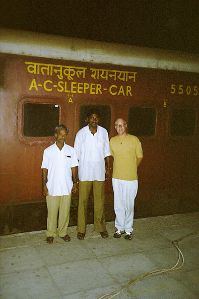
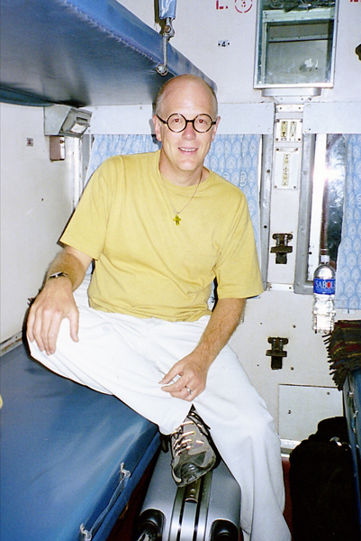
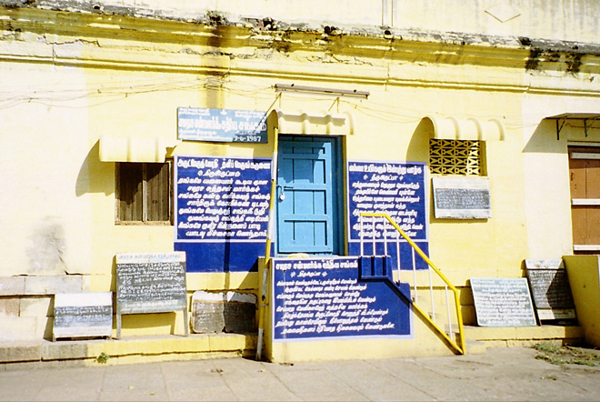
Designed in 1560 by Vishwanatha Nayak, the Sri Meenakshi Temple was substantially built during the reign of Tirumalai Nayak (1623-55) but its history goes back 2,000 years to the time when Madurai was the capital of the Pandya kings. The temple, a spectacular pastiche of Dravidian architecture, celebrates the enormously popular and powerful goddess Meenakshi who is the deity and protector of Madurai. Almost a city within a city, it features highly decorative gopurams and towers, and also columned halls such as the Kilikattu Mandapam as well as shops and, bizarrely, a warren of tailoring businesses.. !
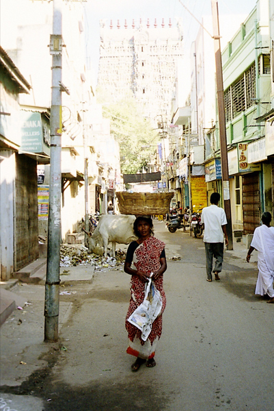
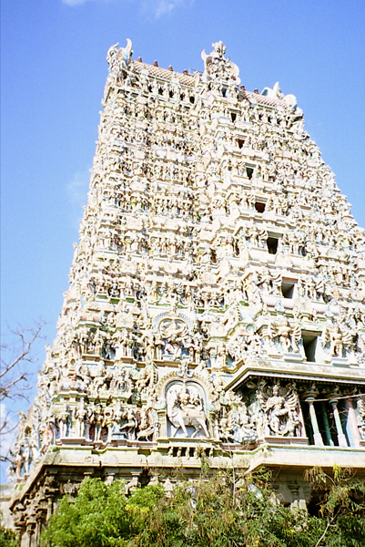
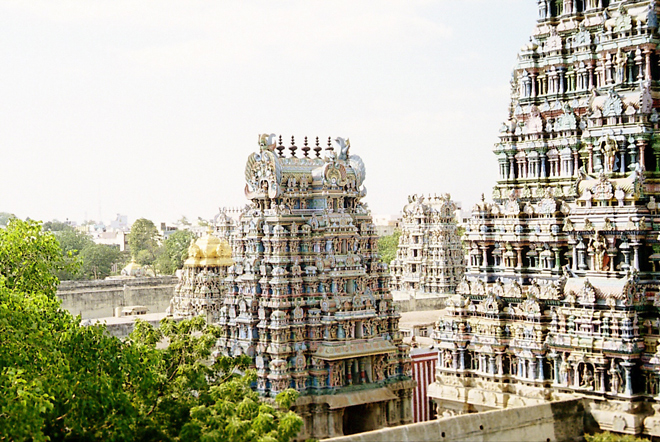
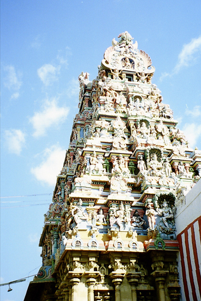
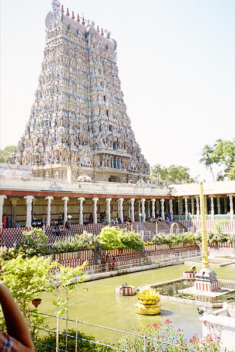
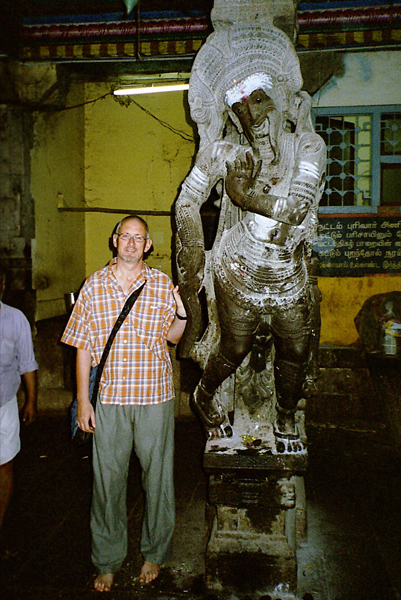
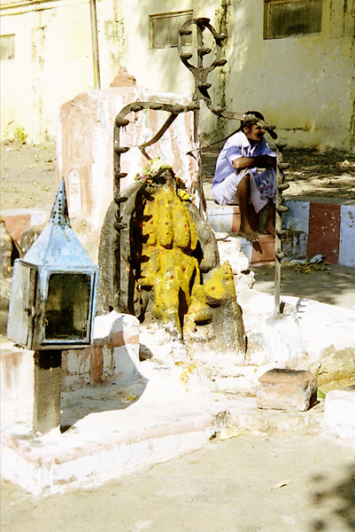
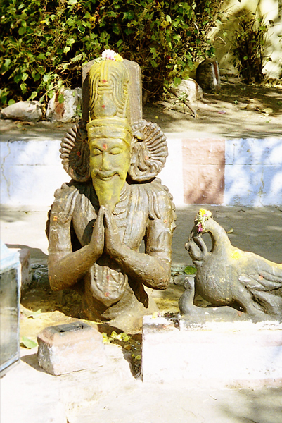
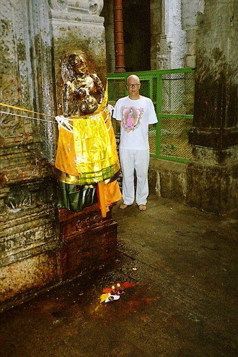
We also met the friendly Temple elephant with her mahout. Her trick was to pick a coin from the head of a bystander with her trunk and pass it to the keeper.. !
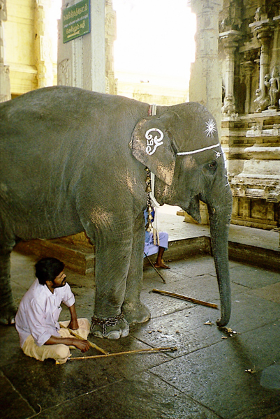
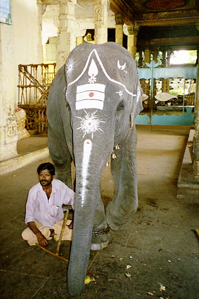
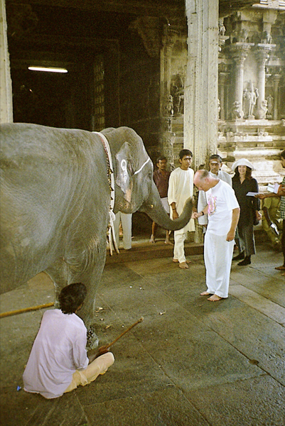
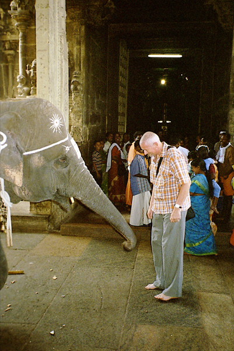
As is often the case in religious establishments (and Hindu temples are no exception), it's an opportunity to rake in money from the weak-willed and / or faithful. At the Sri Meenakshi Temple, worshippers were encouraged to light candles made from ghee and purchase pats of rather rancid butter and fling them at a statue of the goddess Meenakshi. If the butter pat sticks to the statue this reputedly gives good luck.. !
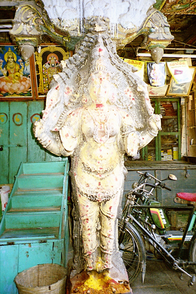
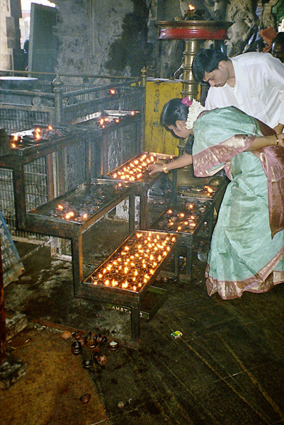
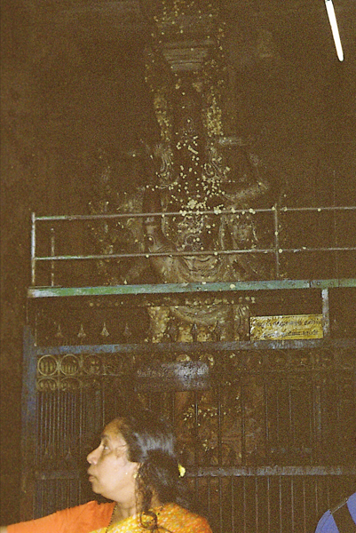
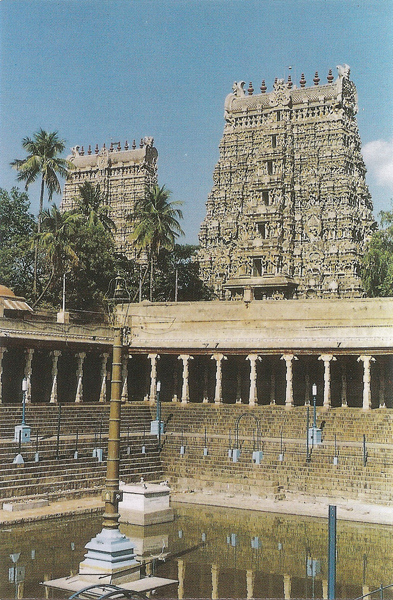
We returned to the Temple at 9pm in the evening to watch the ceremony when the movable images of the god and goddess are carried to the bedchamber. Here the final puja ceremony of the day - the lalipuja - is performed, when for thirty minutes or so the priests sing lullabies (lali) before closing the Temple for the night.. !
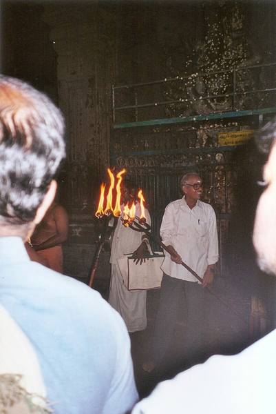
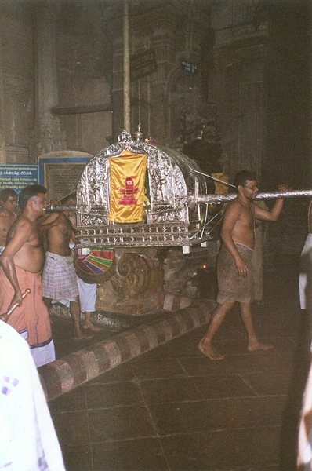
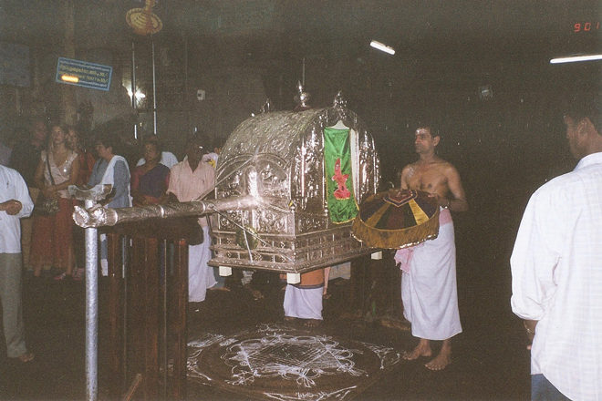
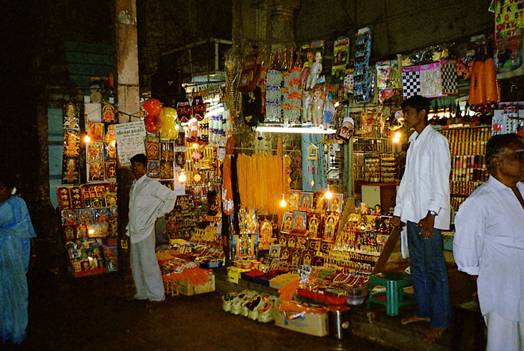
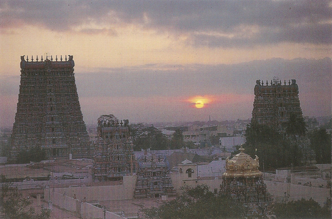
Remember the guy who lost his passport and wallet? After it was returned to him he celebrated by taking us to the Apollo 96, a crazy roof-top bar with a sci-fi theme - "boasting 75,000 flashing diodes" - Tamil Nadu's hi-tech bar looked just like the set of a low-budget 1970s movie .... !
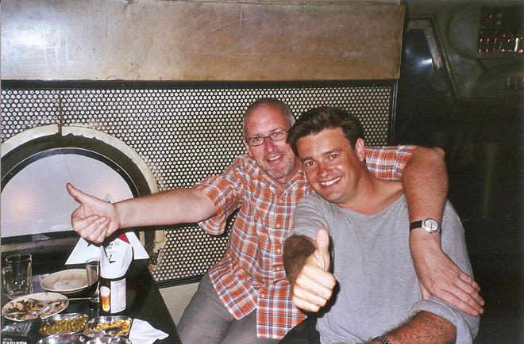